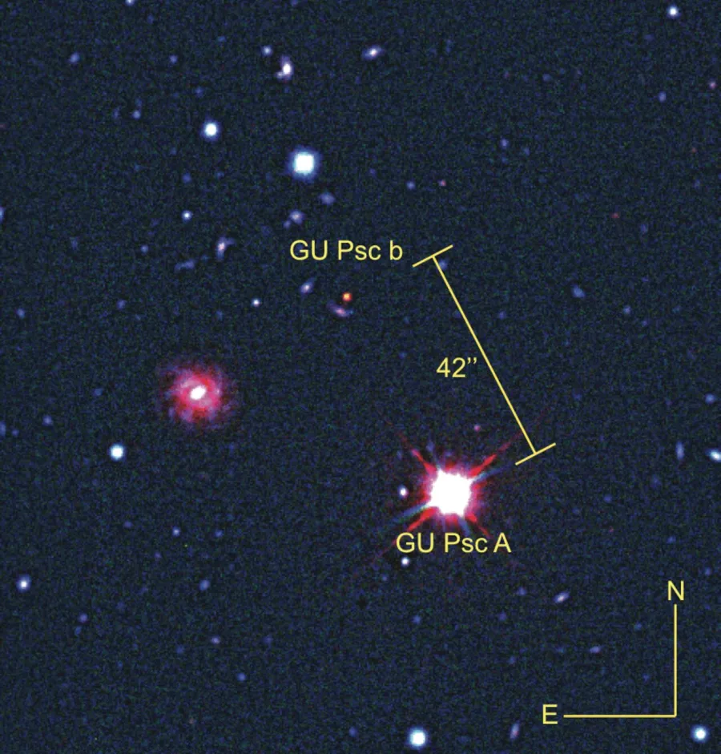

May 12, 2014
GU Piscium b: planet photographed at 2,000 times the Earth–Sun distance
A team led by the Université de Montréal discovered and imaged a gas giant around the star GU Piscium. The color image combines visible and infrared images from the Gemini South telescope with an infrared image from the CFHT; the planet appears as a small red dot, 42 arcseconds from the star.
GU Psc b is about 2,000 times as far from its star as the Earth is from the Sun – a record in 2014 – and takes about 80,000 years to complete one orbit. Its mass is estimated at 9 to 13 Jupiter masses and its temperature at about 800 degrees Celsius. The system is 155 light-years away.
Sources: Gemini Observatory / NOIRLab: "Odd planet. So far from its star..." (gemini1404)., 2014-05-12; NOIRLab: "Odd planet, so far from its star..." (image gemini1404a)., 2014-05-12